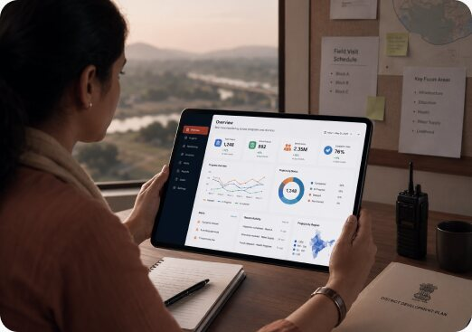

AI at the Core
From predictive analytics and intelligent automation to AI-enabled dashboards and decision-support systems — we embed AI into every solution we build for government.
Empowering governments and public institutions with digital platforms, data intelligence, AI-driven insights, and technology solutions that improve service delivery and governance outcomes.
Speak to an expert
At Positive Mantra Consulting, we build technology solutions designed for the realities of public service delivery. Our platforms work across diverse geographies, varying levels of digital literacy, and complex institutional environments. From data platforms and citizen-facing portals to AI-powered dashboards and decision support systems, we help governments make faster, smarter, and more informed decisions. Artificial Intelligence is embedded across our solutions through predictive analytics, intelligent automation, AI-enabled training, and digital governance tools. Every solution begins with a real governance challenge and is built for adoption, scalability, and long-term impact.

Predictive analytics, intelligent dashboards, and AI-enabled decision-support tools that provide real-time insights, improve programme monitoring, and enable data-driven decision-making across government initiatives.
Schedule a demoFrom predictive analytics and intelligent automation to AI-enabled dashboards and decision-support systems — we embed AI into every solution we build for government.
We design and engineer technology that fits how government operates — secure, scalable, and built to work within complex institutional and procurement frameworks.
From data architecture and systems integration to front-end portals and GIS platforms — we deliver end-to-end technology, not point solutions.
Engineered for low-connectivity environments, multilingual interfaces, and users across every level of digital literacy — from remote Panchayats to central ministries.
Our technologists work alongside sector experts in governance, rural development, and public finance — ensuring what we build solves the right problem, not just the obvious one.

Prachi leads the design and delivery of capacity-building frameworks that strengthen capabilities across the development ecosystem, from senior government officials to last-mile community stakeholders. Integrating behavioural insights, contextual design, and digital learning tools, she builds stakeholder competencies, accountability, and confidence while ensuring knowledge translates into action from the training room to the field.

Majid Hussain leads large-scale capacity building and government consulting programmes at PMC, driving institutional strengthening and improved public service delivery. He has successfully managed state-wide initiatives, overseeing programme planning, stakeholder coordination, training management, quality assurance, and project monitoring. Through his leadership, Majid advances PMC's mission of delivering impactful, outcome-driven consulting solutions that strengthen governance and public sector performance.
Whether you are looking to modernize citizen services, deploy AI-powered governance systems, improve operational visibility, or accelerate digital transformation, PMC can help you move from strategy to implementation.
Get in touch